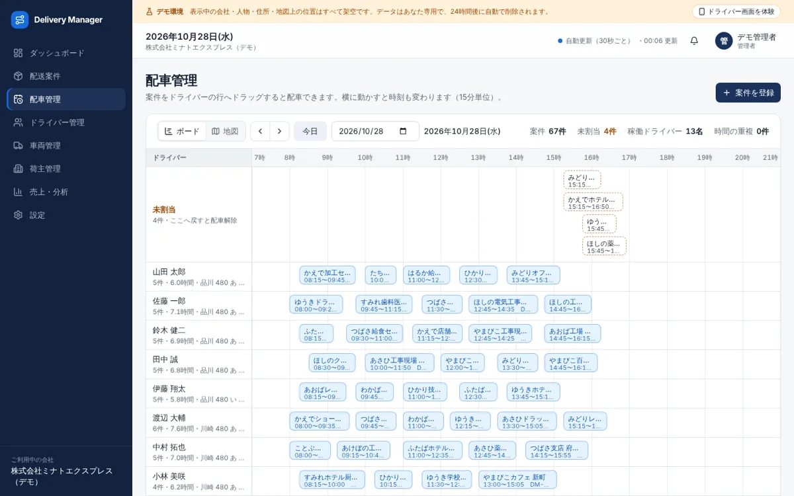
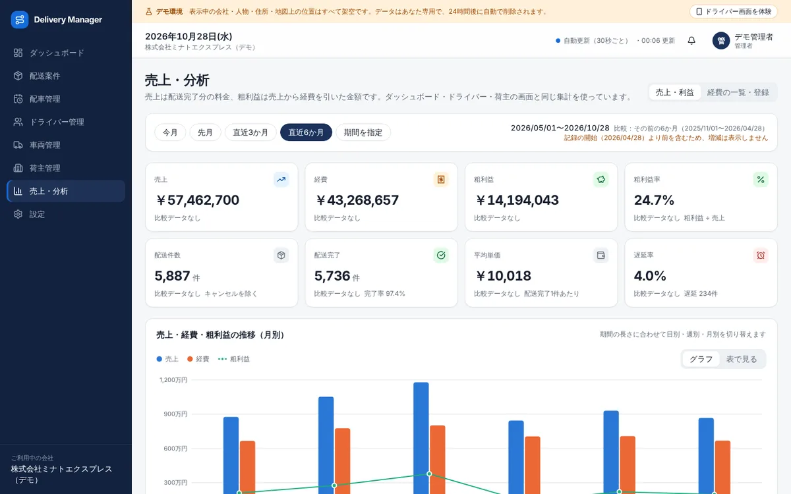
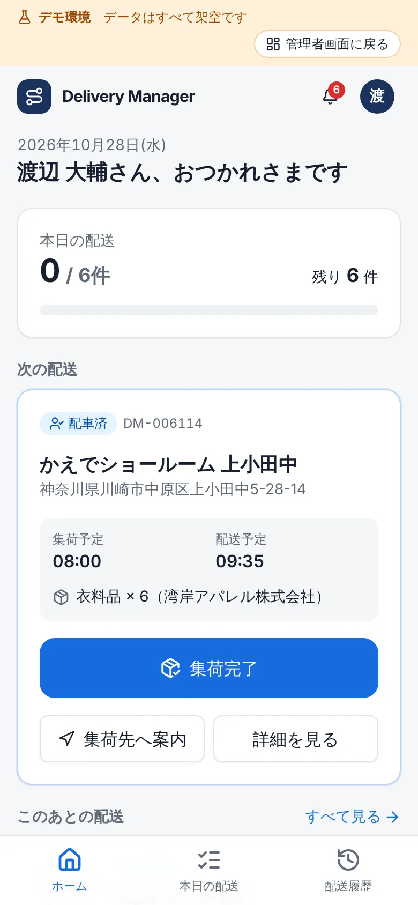
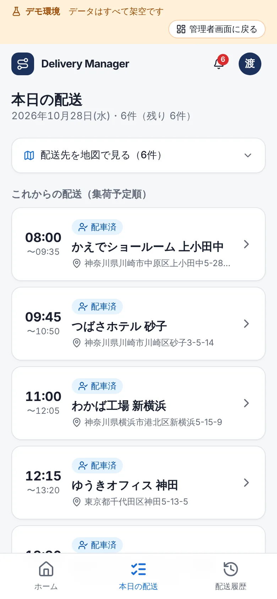
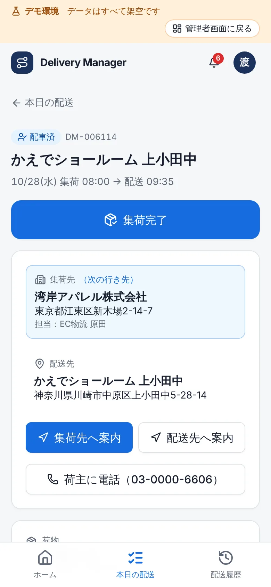
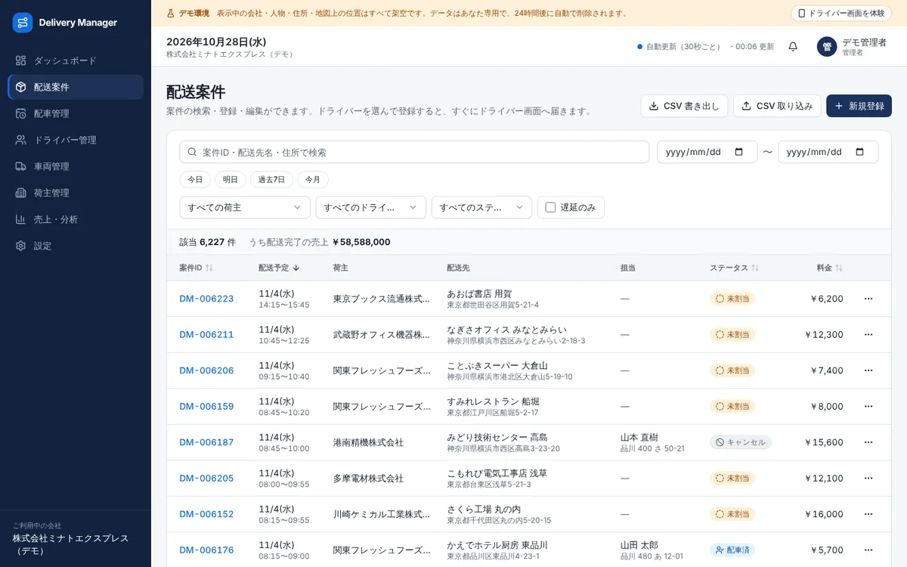

Delivery Manager
配送会社の案件・配車・ドライバー・売上を、ひとつの画面で管理する業務システムです。
- Client
- 従業員5〜30名の配送会社
- Users
- 経営者・配車担当（PC）
ドライバー（スマートフォン） - Demo
- 登録不要。訪問者ごとに
専用のデモ会社を作成

Overview
プロジェクト概要
配送案件・配車・ドライバー・車両・荷主・売上をまとめて管理する、中小規模の配送会社向けのシステムです。
管理者は PC で配車と数字を確認し、ドライバーはスマートフォンから配送の状況を更新します。画面に表示する数字は、すべてデータベースの実データから集計しています。
Problem
想定した業務課題
- 配送案件や配車の予定が、Excel・紙・ホワイトボードに分かれて管理されている
- 配送の進み具合や遅れが、事務所からすぐには分からない
- 売上・粗利益・請求の状況を確かめるたびに、集計の手間がかかる
- 車検や保険の期限など、見落とすと困る情報に気づきにくい
Solution
解決方法
- 案件・配車・ドライバー・車両・荷主・売上をひとつのデータベースにまとめ、売上や遅延の定義を1か所に揃えて、どの画面でも同じ数字が出るようにしました。
- 配車は「時間 × ドライバー」のボードでドラッグして割り当てます。予定が重なる場合は、確認してから保存します。
- ドライバーは「集荷完了 → 配送開始 → 配送完了」をワンタップで更新し、管理者の画面は30秒ごとに最新の状態になります。
- 遅延や車検・保険の期限は、ダッシュボードのアラートにまとめて表示します。
Features
主要機能
- ダッシュボード
- 本日の配送状況、今月の売上と粗利益、遅延や期限のアラート、配送先とドライバーの地図。
- 配送案件
- 登録・編集・条件検索。CSV の書き出しと取り込み（Shift_JIS・UTF-8、確認画面つき）。
- 配車管理
- 時間 × ドライバーのボードでドラッグして割り当て・時刻変更。地図表示への切り替え。
- ドライバー・車両・荷主
- 実績、担当車両、車検と保険の期限、荷主ごとの請求と未請求。
- 売上・分析
- 期間ごとの売上・経費・粗利益・遅延率。荷主別・ドライバー別のランキングと前期間との比較。
- ドライバー画面
- 本日の担当案件、ステータス更新、道案内と電話、位置情報の共有（本人がオンにしている間だけ）。
Screens
スクリーンショット






Tech
使用技術
- Next.js 16（App Router・Server Actions）
- React 19
- TypeScript
- PostgreSQL（Neon）
- Tailwind CSS 4
- shadcn/ui
- Recharts
- Leaflet・OpenStreetMap
- React Hook Form・Zod
- Vitest
- Playwright
- 権限は PostgreSQL の行レベルセキュリティ（RLS）で守り、会社・ドライバーごとにデータを分けています。
- 業務ルールは、画面・サーバー・データベースの3か所で確認しています。
- 同時に編集された場合は、後から保存した内容で他の人の更新を上書きしないようにしています。
Links
デモ・ソースコード
- デモdelivery-manager-azure.vercel.app（新しいタブで開きます）
- GitHubgithub.com/tono3679-creator/delivery-manager（新しいタブで開きます）
登録は不要です。ログイン画面の「管理者として体験」「ドライバーとして体験」を押すと、訪問者ごとに専用のデモ会社（架空の配送会社・案件 約6,000件）が作られ、24時間後に自動で削除されます。